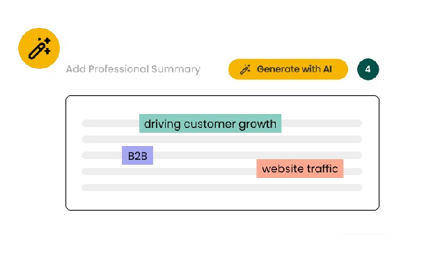
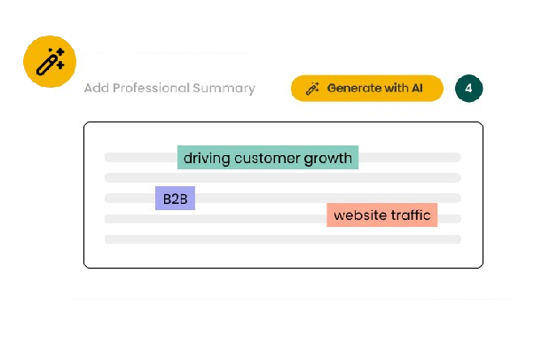

Effortless Summarization with AI
Transform lengthy texts into concise summaries in seconds.
Whether you're a student, researcher, or professional, SummarizePro is here to enhance your productivity and streamline your reading process.
Effortless Summarization with AI
Whether you're a student, researcher, or professional, SummarizePro is here to enhance your productivity and streamline your reading process.
